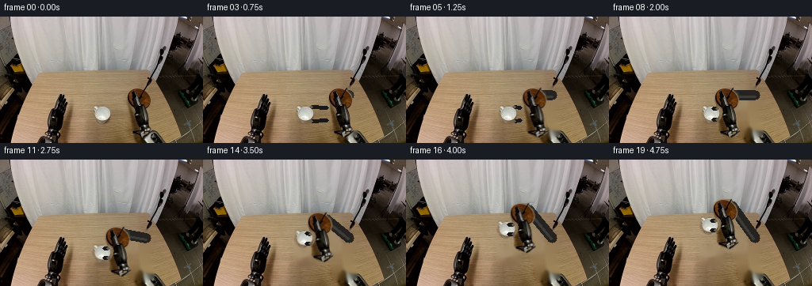
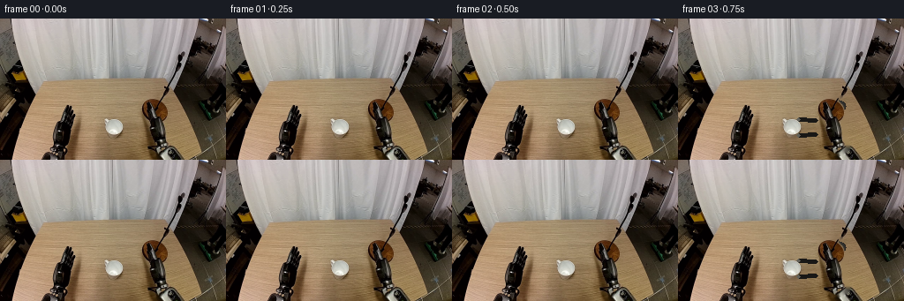

CODING AGENTS AS PIXEL WORLD MODELS
traex/GPT-5.6-Sol · common50_0031
点击播放 · 原生 RGB 像素
逐轮保存的候选
回放视频、检查图与代码变化。
每份候选均可单独播放。实际图片检查记录在下方工具轨迹中。
候选 01播放与检查图
点击播放 · 原生 RGB 像素


展开代码变化
--- 上一保存版本
+++ 本次保存版本
@@ -0,0 +1,191 @@
+from pathlib import Path
+import cv2
+import numpy as np
+from PIL import Image
+import artifact_io
+
+CASE_DIR = Path(__file__).resolve().parent
+
+
+def smoothstep(x):
+ x = np.clip(x, 0.0, 1.0)
+ return x*x*(3.0-2.0*x)
+
+
+def shift_layer(rgb, alpha, dx, dy):
+ """Subpixel translation of a premultiplied RGB layer."""
+ M = np.float32([[1, 0, dx], [0, 1, dy]])
+ a = cv2.warpAffine(alpha, M, (rgb.shape[1], rgb.shape[0]),
+ flags=cv2.INTER_LINEAR, borderMode=cv2.BORDER_CONSTANT)
+ premul = rgb.astype(np.float32) * alpha[..., None]
+ p = cv2.warpAffine(premul, M, (rgb.shape[1], rgb.shape[0]),
+ flags=cv2.INTER_LINEAR, borderMode=cv2.BORDER_CONSTANT)
+ return p, a
+
+
+def over(dst, premul, alpha):
+ return dst * (1.0-alpha[..., None]) + premul
+
+
+def line_layer(shape, p1, p2, width, color, highlight=True):
+ """A softly antialiased, subtly shaded metal capsule."""
+ h, w = shape[:2]
+ rgb = np.zeros((h,w,3), np.float32)
+ a = np.zeros((h,w), np.float32)
+ p1 = tuple(int(round(v)) for v in p1); p2 = tuple(int(round(v)) for v in p2)
+ cv2.line(a, p1, p2, 1.0, int(width), cv2.LINE_AA)
+ cv2.circle(a, p1, int(width/2), 1.0, -1, cv2.LINE_AA)
+ cv2.circle(a, p2, int(width/2), 1.0, -1, cv2.LINE_AA)
+ rgb[:] = color
+ # subdued highlight down the upper-left of the rigid member
+ if highlight and width >= 6:
+ hi = np.zeros_like(a)
+ v=np.array([p2[0]-p1[0],p2[1]-p1[1]],float)
+ n=np.array([-v[1],v[0]]); n=n/(np.linalg.norm(n)+1e-6)
+ off=n*min(2.0,width*.16)
+ q1=(int(round(p1[0]-off[0])),int(round(p1[1]-off[1])))
+ q2=(int(round(p2[0]-off[0])),int(round(p2[1]-off[1])))
+ cv2.line(hi,q1,q2,0.34,max(1,int(width*.18)),cv2.LINE_AA)
+ rgb = rgb*(1-hi[...,None]) + np.array([104,104,99],np.float32)*hi[...,None]
+ return rgb*a[...,None], a
+
+
+def make_masks(src):
+ h,w=src.shape[:2]
+ # Mug: the compact bright, low-saturation connected component centered near (129,123).
+ mx = src.max(2); mn=src.min(2); val=src.mean(2)
+ cand=((mx-mn)<45)&(val>115)
+ gate=np.zeros((h,w),np.uint8); gate[109:136,112:147]=1
+ cc=(cand&gate.astype(bool)).astype(np.uint8)
+ n,lab,stats,cent=cv2.connectedComponentsWithStats(cc,8)
+ seed_label=lab[123,129]
+ if seed_label==0:
+ seed_label=1+np.argmax(stats[1:,cv2.CC_STAT_AREA])
+ mug=(lab==seed_label).astype(np.uint8)
+ mug=cv2.morphologyEx(mug,cv2.MORPH_CLOSE,np.ones((3,3),np.uint8),iterations=2)
+ mug=cv2.dilate(mug,np.ones((3,3),np.uint8),iterations=1)
+ # Include the thin ceramic rim and its immediately attached antialiased boundary.
+ mug_gate=np.zeros_like(mug); cv2.ellipse(mug_gate,(129,123),(13,11),0,0,360,1,-1)
+ mug=np.maximum(mug, mug_gate*((val>100)&((mx-mn)<65)))
+ mug_alpha=cv2.GaussianBlur(mug.astype(np.float32),(3,3),0.55)
+ mug_alpha=np.clip(mug_alpha,0,1)
+
+ # Existing right end-effector. Neutral/black metal is separable from warm wood.
+ spread=mx-mn
+ neutral_dark=(val<78)|((spread<34)&(val<185))|((src[:,:,2]>src[:,:,0]-5)&(val<145))
+ poly=np.zeros((h,w),np.uint8)
+ cv2.fillPoly(poly,[np.array([[157,91],[167,88],[181,90],[191,98],[193,119],
+ [190,145],[181,151],[168,146],[162,134],[158,115]],np.int32)],1)
+ hand=(neutral_dark&poly.astype(bool)).astype(np.uint8)
+ hand=cv2.morphologyEx(hand,cv2.MORPH_CLOSE,np.ones((5,5),np.uint8),iterations=2)
+ hand=cv2.dilate(hand,np.ones((3,3),np.uint8),iterations=1)
+ # retain just reasonably substantial pieces, then soften one pixel
+ n,lab,stats,_=cv2.connectedComponentsWithStats(hand,8)
+ keep=np.zeros_like(hand)
+ for i in range(1,n):
+ if stats[i,cv2.CC_STAT_AREA]>=18: keep[lab==i]=1
+ hand_alpha=cv2.GaussianBlur(keep.astype(np.float32),(3,3),0.6)
+ hand_alpha=np.clip(hand_alpha,0,1)
+ return mug_alpha,hand_alpha
+
+
+def add_shadow(frame, center, radii, opacity, blur):
+ h,w=frame.shape[:2]
+ mask=np.zeros((h,w),np.float32)
+ cv2.ellipse(mask,(int(center[0]),int(center[1])),(int(radii[0]),int(radii[1])),0,0,360,opacity,-1,cv2.LINE_AA)
+ mask=cv2.GaussianBlur(mask,(0,0),blur)
+ return frame*(1-mask[...,None]) + np.array([47,34,23],np.float32)*mask[...,None]
+
+
+def generate():
+ src=np.array(Image.open(CASE_DIR/'first_frame.png').convert('RGB'),dtype=np.uint8)
+ h,w=src.shape[:2]
+ mug_a,hand_a=make_masks(src)
+
+ # Remove only objects that will move. Inpainting exposes the same wooden work surface.
+ erase=np.maximum(mug_a,hand_a)
+ erase8=(erase>0.08).astype(np.uint8)*255
+ erase8=cv2.dilate(erase8,np.ones((5,5),np.uint8),iterations=1)
+ clean=cv2.inpaint(src,erase8,4.0,cv2.INPAINT_TELEA).astype(np.float32)
+
+ srcf=src.astype(np.float32)
+ frames=[]
+ for i in range(20):
+ if i==0:
+ frames.append(src.copy())
+ continue
+ # Two beats of stability, then a deliberate reach. The mug begins moving only after grasp.
+ reach=smoothstep((i-2)/6.0)
+ lift=smoothstep((i-9)/9.0)
+ dx_hand=-27.0*reach - 2.0*lift
+ dy_hand=-40.0*lift
+ dx_mug=-2.0*lift
+ dy_mug=-40.0*lift
+
+ if reach<0.015 and lift==0:
+ frames.append(src.copy())
+ continue
+
+ out=clean.copy()
+
+ # Contact shadow stays on the table while the cup rises and becomes diffuse/faint.
+ out=add_shadow(out,(129,132),(10+5*lift,3+2*lift),0.22*(1-.80*lift),1.2+2.2*lift)
+
+ # A rigid wrist bridge joins the stationary arm to the translated end-effector.
+ # It lengthens only over the small reach, reading as a rotating forearm in the source arm mass.
+ attach0=np.array([184.0,99.0])
+ attach1=attach0+np.array([dx_hand,dy_hand])
+ if np.linalg.norm(attach1-attach0)>1:
+ p,a=line_layer(src.shape,attach0,attach1,12,(34,32,29),True)
+ out=over(out,p,a*.98)
+ # round revolute wrist at the moving end
+ j=np.zeros((h,w),np.float32)
+ cv2.circle(j,(int(round(attach1[0])),int(round(attach1[1]))),7,1,-1,cv2.LINE_AA)
+ jr=np.zeros_like(out); jr[:]=[48,47,43]
+ out=over(out,jr*j[...,None],j)
+ cv2.circle(out,(int(round(attach1[0]-1)),int(round(attach1[1]-1))),3,(94,92,85),-1,cv2.LINE_AA)
+
+ hp,ha=shift_layer(srcf,hand_a,dx_hand,dy_hand)
+ out=over(out,hp,ha)
+
+ # Translate the original ceramic pixels as one rigid body after closure.
+ mp,ma=shift_layer(srcf,mug_a,dx_mug,dy_mug)
+ out=over(out,mp,ma)
+
+ # Two stable opposing fingers visibly close around the right side of the mug.
+ # Before contact they remain spread; afterward they preserve a fixed grasp while lifting.
+ closure=smoothstep((i-6)/3.0)
+ mug_c=np.array([129.0+dx_mug,123.0+dy_mug])
+ wrist=np.array([158.0+dx_hand,123.0+dy_hand])
+ sep=9.2-3.2*closure
+ for sign in (-1,1):
+ y=mug_c[1]+sign*sep
+ start=(wrist[0], wrist[1]+sign*(8.3-2.0*closure))
+ end=(mug_c[0]+7.5,y)
+ p,a=line_layer(src.shape,start,end,4,(25,24,22),False)
+ out=over(out,p,a)
+ # narrow steel catching edge
+ tip=np.zeros((h,w),np.float32)
+ cv2.circle(tip,(int(round(end[0])),int(round(end[1]))),2,1,-1,cv2.LINE_AA)
+ col=np.zeros_like(out);col[:]=[91,89,82]
+ out=over(out,col*tip[...,None],tip*.72)
+
+ # Very restrained undersurface shading gives height without deforming the rigid mug.
+ if lift>0.03:
+ edge=np.zeros((h,w),np.float32)
+ c=(int(round(129+dx_mug)),int(round(130+dy_mug)))
+ cv2.ellipse(edge,c,(8,2),0,0,180,0.09*lift,-1,cv2.LINE_AA)
+ out=out*(1-edge[...,None])
+
+ frames.append(np.clip(out+0.5,0,255).astype(np.uint8))
+
+ return np.stack(frames,axis=0)
+
+
+if __name__=='__main__':
+ frames=generate()
+ assert frames.shape==(20,160,256,3) and frames.dtype==np.uint8
+ # Contract-critical identity check.
+ first=np.array(Image.open(CASE_DIR/'first_frame.png').convert('RGB'),dtype=np.uint8)
+ assert np.array_equal(frames[0],first)
+ artifact_io.save(frames,CASE_DIR)
可观测工具轨迹
实际执行的命令与返回图片。
命令 1exit 0
/bin/bash -lc "cat GENERATION_RULES.md && printf '\\n--- PROMPT ---\\n' && cat prompt.txt"
命令 2exit 1
/bin/bash -lc "find . -maxdepth 2 -type f -printf '%p %s bytes\\n' | sort && printf '\\nTools:\\n' && command -v ffmpeg && command -v python3"
命令 3exit 0
/bin/bash -lc "cat task_spec.json; sed -n '1,240p' artifact_io.py"
命令 4exit 0
/bin/bash -lc "python3 - <<'PY'
from PIL import Image
import numpy as np
im=np.array(Image.open('first_frame.png').convert('RGB'))
print(im.shape, im.dtype)
print('corners',im[0,0],im[0,-1],im[-1,0],im[-1,-1])
# quantized dominant colors
q=(im//16)*16
u,c=np.unique(q.reshape(-1,3),axis=0,return_counts=True)
for i in np.argsort(c)[-25:][::-1]: print(c[i],u[i])
# luminance slices statistics
lum=im.mean(2)
for y in range(0,160,10): print('y',y,'mean',im[y].mean(0).round(1),'lumrange',round(lum[y].min()),round(lum[y].max()))
PY"命令 5exit 0
/bin/bash -lc "python3 - <<'PY'
import cv2
print('cv2',cv2.__version__)
PY"命令 6exit 0
/bin/bash -lc "python3 - <<'PY'
from PIL import Image
import numpy as np
im=np.array(Image.open('first_frame.png').convert('RGB'))
# block mean classify: bright neutral= W, neutral mid=g, dark=#, brown=b, reddish=r, blue=u, saturated=s
for bs in [4,8]:
print('\\nBLOCK',bs)
for y in range(0,160,bs):
line=''
for x in range(0,256,bs):
a=im[y:y+bs,x:x+bs].reshape(-1,3).mean(0); mx=a.max(); mn=a.min(); lum=a.mean()
if lum<28: c='#'
elif lum<55:c='D'
elif mx-mn<12 and lum>210:c='W'
elif mx-mn<15 and lum>160:c='O'
elif mx-mn<18 and lum>110:c='g'
elif a[0]>a[2]+22 and a[1]>a[2]+10: c='b'
elif a[2]>a[0]+15:c='u'
elif a[0]>a[1]+20:c='r'
else:c='.'
line+=c
print(line)
PY"命令 7exit 0
/bin/bash -lc "python3 - <<'PY'
import cv2,numpy as np
from PIL import Image
im=np.array(Image.open('first_frame.png').convert('RGB'))
hsv=cv2.cvtColor(im,cv2.COLOR_RGB2HSV)
# several bright/gray masks
for name,m in [('white',(hsv[:,:,1]<35)&(hsv[:,:,2]>175)),('bright',(hsv[:,:,1]<60)&(hsv[:,:,2]>190)),('dark',(hsv[:,:,2]<50))]:
n,lab,stats,cent=cv2.connectedComponentsWithStats(m.astype('uint8'))
print('\\n',name)
for i in np.argsort(stats[1:,4])[-20:][::-1]+1:
x,y,w,h,a=stats[i]; print(a,(x,y,w,h),cent[i].round(1))
PY"命令 8exit 0
/bin/bash -lc "python3 - <<'PY'
from PIL import Image
import numpy as np
im=np.array(Image.open('first_frame.png').convert('RGB'))
chars=' .,:;irsXA253hMHGS#9B&@'
# edge strength ascii 2x2 max
import cv2
g=cv2.cvtColor(im,cv2.COLOR_RGB2GRAY); e=cv2.Canny(g,40,100)
print('EDGE')
for y in range(0,160,4):
print(''.join('#' if e[y:y+4,x:x+4].max() else ' ' for x in range(0,256,4)))
print('LUM')
for y in range(0,160,4):
line=''
for x in range(0,256,4):
a=g[y:y+4,x:x+4].mean(); line+=chars[min(len(chars)-1,int(a/256*len(chars)))]
print(line)
PY"命令 9exit 0
/bin/bash -lc "python3 - <<'PY'
from PIL import Image
import numpy as np,cv2
im=np.array(Image.open('first_frame.png').convert('RGB'))
# detailed categories each 2x2 crop around action
for y in range(78,160,2):
line=''
for x in range(90,216,2):
a=im[y:y+2,x:x+2].reshape(-1,3).mean(0); lum=a.mean(); d=a.max()-a.min()
if lum<22:c='@'
elif lum<40:c='#'
elif lum<60:c='D'
elif d<12 and lum>210:c='W'
elif d<15 and lum>175:c='O'
elif d<18 and lum>140:c='g'
elif a[0]>a[2]+35 and a[1]>a[2]+18 and lum>100:c='b'
elif a[0]>a[2]+20 and a[1]>a[2]+10:c='n'
elif a[2]>a[0]+15:c='u'
elif a[0]>a[1]+25:c='r'
elif lum>125:c='a'
elif lum>80:c='m'
else:c='.'
line+=c
print(f'{y:03} {line}')
print('x tens crop 90..216')
print(' '+''.join(str((x//10)%10) for x in range(90,216,2)))
print(' '+''.join(str(x%10//2) for x in range(90,216,2)))
PY"命令 10exit 0
/bin/bash -lc "python3 - <<'PY'
from PIL import Image
import numpy as np
im=np.array(Image.open('first_frame.png').convert('RGB'))
# rows list contiguous runs where neutral bright (mug) or dark/nonbrown (robot), in action roi
for y in range(88,151,2):
print('\\ny=',y)
for typ,m in [
('white', (im[y,:,0]>150)&(np.max(im[y],1)-np.min(im[y],1)<35)),
('dark',(im[y].mean(1)<70)),
('neutral',(np.max(im[y],1)-np.min(im[y],1)<20))]:
inds=np.where(m & (np.arange(256)>=100)&(np.arange(256)<220))[0]
runs=[]
if len(inds):
q=np.split(inds,np.where(np.diff(inds)>1)[0]+1);runs=[(a[0],a[-1]) for a in q if len(a)>=2]
print(typ,runs)
PY"命令 11exit 0
/bin/bash -lc "python3 - <<'PY'
from PIL import Image
import numpy as np
im=np.array(Image.open('first_frame.png').convert('RGB'))
print('bright neutral per row')
for y in range(105,140):
a=im[y]; m=(a.mean(1)>130)&((a.max(1)-a.min(1))<35)&(np.arange(256)>105)&(np.arange(256)<155)
xs=np.where(m)[0]
print(y, (xs.min(),xs.max(),len(xs)) if len(xs) else None)
print('\\nRGB sample every pixel crop encoded light levels')
ch=' .oO0W'
for y in range(108,138):
s=''
for x in range(108,153):
p=im[y,x]; lum=p.mean(); sat=p.max()-p.min()
if sat<35 and lum>110: c=ch[min(5,max(0,int((lum-110)/25)))]
elif lum<30:c='#'
elif lum<65:c='D'
elif p[0]-p[2]>25:c='b'
else:c='x'
s+=c
print(f'{y:3} {s}')
PY"命令 12exit 0
/bin/bash -lc "python3 - <<'PY'
from PIL import Image
import numpy as np
im=np.array(Image.open('first_frame.png').convert('RGB'))
for y in range(88,161,6):
print('y',y,end=' ')
for x in range(145,211,5):
p=im[min(y,159),x];print(f'{x}:{p[0]:02x}{p[1]:02x}{p[2]:02x}',end=' ')
print()
PY"命令 13exit 1
/bin/bash -lc "cat > generate.py <<'PY'
from pathlib import Path
import cv2
import numpy as np
from PIL import Image
import artifact_io
CASE_DIR = Path(__file__).resolve().parent
def smoothstep(x):
x = np.clip(x, 0.0, 1.0)
return x*x*(3.0-2.0*x)
def shift_layer(rgb, alpha, dx, dy):
\"\"\"Subpixel translation of a premultiplied RGB layer.\"\"\"
M = np.float32([[1, 0, dx], [0, 1, dy]])
a = cv2.warpAffine(alpha, M, (rgb.shape[1], rgb.shape[0]),
flags=cv2.INTER_LINEAR, borderMode=cv2.BORDER_CONSTANT)
premul = rgb.astype(np.float32) * alpha[..., None]
p = cv2.warpAffine(premul, M, (rgb.shape[1], rgb.shape[0]),
flags=cv2.INTER_LINEAR, borderMode=cv2.BORDER_CONSTANT)
return p, a
def over(dst, premul, alpha):
return dst * (1.0-alpha[..., None]) + premul
def line_layer(shape, p1, p2, width, color, highlight=True):
\"\"\"A softly antialiased, subtly shaded metal capsule.\"\"\"
h, w = shape[:2]
rgb = np.zeros((h,w,3), np.float32)
a = np.zeros((h,w), np.float32)
p1 = tuple(int(round(v)) for v in p1); p2 = tuple(int(round(v)) for v in p2)
cv2.line(a, p1, p2, int(width), 1.0, cv2.LINE_AA)
cv2.circle(a, p1, int(width/2), 1.0, -1, cv2.LINE_AA)
cv2.circle(a, p2, int(width/2), 1.0, -1, cv2.LINE_AA)
rgb[:] = color
# subdued highlight down the upper-left of the rigid member
if highlight and width >= 6:
hi = np.zeros_like(a)
v=np.array([p2[0]-p1[0],p2[1]-p1[1]],float)
n=np.array([-v[1],v[0]]); n=n/(np.linalg.norm(n)+1e-6)
off=n*min(2.0,width*.16)
q1=(int(round(p1[0]-off[0])),int(round(p1[1]-off[1])))
q2=(int(round(p2[0]-off[0])),int(round(p2[1]-off[1])))
cv2.line(hi,q1,q2,max(1,int(width*.18)),0.34,cv2.LINE_AA)
rgb = rgb*(1-hi[...,None]) + np.array([104,104,99],np.float32)*hi[...,None]
return rgb*a[...,None], a
def make_masks(src):
h,w=src.shape[:2]
# Mug: the compact bright, low-saturation connected component centered near (129,123).
mx = src.max(2); mn=src.min(2); val=src.mean(2)
cand=((mx-mn)<45)&(val>115)
gate=np.zeros((h,w),np.uint8); gate[109:136,112:147]=1
cc=(cand&gate.astype(bool)).astype(np.uint8)
n,lab,stats,cent=cv2.connectedComponentsWithStats(cc,8)
seed_label=lab[123,129]
if seed_label==0:
seed_label=1+np.argmax(stats[1:,cv2.CC_STAT_AREA])
mug=(lab==seed_label).astype(np.uint8)
mug=cv2.morphologyEx(mug,cv2.MORPH_CLOSE,np.ones((3,3),np.uint8),iterations=2)
mug=cv2.dilate(mug,np.ones((3,3),np.uint8),iterations=1)
# Include the thin ceramic rim and its immediately attached antialiased boundary.
mug_gate=np.zeros_like(mug); cv2.ellipse(mug_gate,(129,123),(13,11),0,0,360,1,-1)
mug=np.maximum(mug, mug_gate*((val>100)&((mx-mn)<65)))
mug_alpha=cv2.GaussianBlur(mug.astype(np.float32),(3,3),0.55)
mug_alpha=np.clip(mug_alpha,0,1)
# Existing right end-effector. Neutral/black metal is separable from warm wood.
spread=mx-mn
neutral_dark=(val<78)|((spread<34)&(val<185))|((src[:,:,2]>src[:,:,0]-5)&(val<145))
poly=np.zeros((h,w),np.uint8)
cv2.fillPoly(poly,[np.array([[157,91],[167,88],[181,90],[191,98],[193,119],
[190,145],[181,151],[168,146],[162,134],[158,115]],np.int32)],1)
hand=(neutral_dark&poly.astype(bool)).astype(np.uint8)
hand=cv2.morphologyEx(hand,cv2.MORPH_CLOSE,np.ones((5,5),np.uint8),iterations=2)
hand=cv2.dilate(hand,np.ones((3,3),np.uint8),iterations=1)
# retain just reasonably substantial pieces, then soften one pixel
n,lab,stats,_=cv2.connectedComponentsWithStats(hand,8)
keep=np.zeros_like(hand)
for i in range(1,n):
if stats[i,cv2.CC_STAT_AREA]>=18: keep[lab==i]=1
hand_alpha=cv2.GaussianBlur(keep.astype(np.float32),(3,3),0.6)
hand_alpha=np.clip(hand_alpha,0,1)
return mug_alpha,hand_alpha
def add_shadow(frame, center, radii, opacity, blur):
h,w=frame.shape[:2]
mask=np.zeros((h,w),np.float32)
cv2.ellipse(mask,(int(center[0]),int(center[1])),(int(radii[0]),int(radii[1])),0,0,360,opacity,-1,cv2.LINE_AA)
mask=cv2.GaussianBlur(mask,(0,0),blur)
return frame*(1-mask[...,None]) + np.array([47,34,23],np.float32)*mask[...,None]
def generate():
src=np.array(Image.open(CASE_DIR/'first_frame.png').convert('RGB'),dtype=np.uint8)
h,w=src.shape[:2]
mug_a,hand_a=make_masks(src)
# Remove only objects that will move. Inpainting exposes the same wooden work surface.
erase=np.maximum(mug_a,hand_a)
erase8=(erase>0.08).astype(np.uint8)*255
erase8=cv2.dilate(erase8,np.ones((5,5),np.uint8),iterations=1)
clean=cv2.inpaint(src,erase8,4.0,cv2.INPAINT_TELEA).astype(np.float32)
srcf=src.astype(np.float32)
frames=[]
for i in range(20):
if i==0:
frames.append(src.copy())
continue
# Two beats of stability, then a deliberate reach. The mug begins moving only after grasp.
reach=smoothstep((i-2)/6.0)
lift=smoothstep((i-9)/9.0)
dx_hand=-27.0*reach - 2.0*lift
dy_hand=-40.0*lift
dx_mug=-2.0*lift
dy_mug=-40.0*lift
if reach<0.015 and lift==0:
frames.append(src.copy())
continue
out=clean.copy()
# Contact shadow stays on the table while the cup rises and becomes diffuse/faint.
out=add_shadow(out,(129,132),(10+5*lift,3+2*lift),0.22*(1-.80*lift),1.2+2.2*lift)
# A rigid wrist bridge joins the stationary arm to the translated end-effector.
# It lengthens only over the small reach, reading as a rotating forearm in the source arm mass.
attach0=np.array([184.0,99.0])
attach1=attach0+np.array([dx_hand,dy_hand])
if np.linalg.norm(attach1-attach0)>1:
p,a=line_layer(src.shape,attach0,attach1,12,(34,32,29),True)
out=over(out,p,a*.98)
# round revolute wrist at the moving end
j=np.zeros((h,w),np.float32)
cv2.circle(j,(int(round(attach1[0])),int(round(attach1[1]))),7,1,-1,cv2.LINE_AA)
jr=np.zeros_like(out); jr[:]=[48,47,43]
out=over(out,jr*j[...,None],j)
cv2.circle(out,(int(round(attach1[0]-1)),int(round(attach1[1]-1))),3,(94,92,85),-1,cv2.LINE_AA)
hp,ha=shift_layer(srcf,hand_a,dx_hand,dy_hand)
out=over(out,hp,ha)
# Translate the original ceramic pixels as one rigid body after closure.
mp,ma=shift_layer(srcf,mug_a,dx_mug,dy_mug)
out=over(out,mp,ma)
# Two stable opposing fingers visibly close around the right side of the mug.
# Before contact they remain spread; afterward they preserve a fixed grasp while lifting.
closure=smoothstep((i-6)/3.0)
mug_c=np.array([129.0+dx_mug,123.0+dy_mug])
wrist=np.array([158.0+dx_hand,123.0+dy_hand])
sep=9.2-3.2*closure
for sign in (-1,1):
y=mug_c[1]+sign*sep
start=(wrist[0], wrist[1]+sign*(8.3-2.0*closure))
end=(mug_c[0]+7.5,y)
p,a=line_layer(src.shape,start,end,4,(25,24,22),False)
out=over(out,p,a)
# narrow steel catching edge
tip=np.zeros((h,w),np.float32)
cv2.circle(tip,(int(round(end[0])),int(round(end[1]))),2,1,-1,cv2.LINE_AA)
col=np.zeros_like(out);col[:]=[91,89,82]
out=over(out,col*tip[...,None],tip*.72)
# Very restrained undersurface shading gives height without deforming the rigid mug.
if lift>0.03:
edge=np.zeros((h,w),np.float32)
c=(int(round(129+dx_mug)),int(round(130+dy_mug)))
cv2.ellipse(edge,c,(8,2),0,0,180,0.09*lift,-1,cv2.LINE_AA)
out=out*(1-edge[...,None])
frames.append(np.clip(out+0.5,0,255).astype(np.uint8))
return np.stack(frames,axis=0)
if __name__=='__main__':
frames=generate()
assert frames.shape==(20,160,256,3) and frames.dtype==np.uint8
# Contract-critical identity check.
first=np.array(Image.open(CASE_DIR/'first_frame.png').convert('RGB'),dtype=np.uint8)
assert np.array_equal(frames[0],first)
artifact_io.save(frames,CASE_DIR)
PY
python3 generate.py
python3 - <<'PY'
import numpy as np
from PIL import Image
z=np.load('pixels.npz')['pixels']; print('packed',z.shape,z.dtype)
ims=[np.array(Image.open(f'frames/{i:02d}.png')) for i in range(20)]
print('first exact',np.array_equal(ims[0],np.array(Image.open('first_frame.png'))))
for i in range(20):
d=np.abs(ims[i].astype(int)-ims[0].astype(int)); print(i, np.count_nonzero(np.any(d>0,2)), round(d.mean(),2), tuple(np.where(np.any(d>12,2))[1].min(initial=999) for _ in [0]))
PY"命令 14exit 0
/bin/bash -lc "python3 - <<'PY'
p='generate.py'
s=open(p).read().replace('cv2.line(a, p1, p2, int(width), 1.0, cv2.LINE_AA)','cv2.line(a, p1, p2, 1.0, int(width), cv2.LINE_AA)').replace('cv2.line(hi,q1,q2,max(1,int(width*.18)),0.34,cv2.LINE_AA)','cv2.line(hi,q1,q2,0.34,max(1,int(width*.18)),cv2.LINE_AA)')
open(p,'w').write(s)
PY
python3 generate.py
python3 - <<'PY'
import numpy as np
from PIL import Image
z=np.load('pixels.npz')['pixels']; print('packed',z.shape,z.dtype)
ims=[np.array(Image.open(f'frames/{i:02d}.png')) for i in range(20)]
print('first exact',np.array_equal(ims[0],np.array(Image.open('first_frame.png'))))
for i in range(20):
d=np.abs(ims[i].astype(int)-ims[0].astype(int)); m=np.any(d>12,2); ys,xs=np.where(m)
print(i, np.count_nonzero(np.any(d>0,2)), round(d.mean(),2), (int(xs.min()),int(ys.min()),int(xs.max()),int(ys.max())) if len(xs) else '-')
PY"命令 15exit 0
/bin/bash -lc "python3 - <<'PY'
import generate
from PIL import Image
import numpy as np,cv2
im=np.array(Image.open('first_frame.png'))
for name,a in zip(['mug','hand'],generate.make_masks(im)):
ys,xs=np.where(a>.1)
print(name,'area',round(a.sum()),'bbox',(xs.min(),ys.min(),xs.max(),ys.max()),'centroid',(round((xs*a[ys,xs]).sum()/a[ys,xs].sum(),1),round((ys*a[ys,xs]).sum()/a[ys,xs].sum(),1)))
for y in range(80,160,4):
xx=np.where(a[y]>.1)[0]
if len(xx): print(y,(xx.min(),xx.max()),round(a[y].sum(),1))
PY"命令 16exit 0
/bin/bash -lc 'ls -lh pixels.npz inspection.png transition_check.png index.html frames/19.png generate.py; python3 -m py_compile generate.py artifact_io.py'
命令 17exit 0
/bin/bash -lc "python3 - <<'PY'
from PIL import Image
import numpy as np
for fi in [0,5,9,12,15,19]:
im=np.array(Image.open(f'frames/{fi:02}.png'))
print('\\nFRAME',fi)
# 4x4 blocks categorical crop 100:205,45:155
for y in range(45,156,4):
line=''
for x in range(100,205,4):
a=im[y:y+4,x:x+4].reshape(-1,3).mean(0);lum=a.mean();d=a.max()-a.min()
if lum<28:c='@'
elif lum<55:c='#'
elif d<14 and lum>190:c='W'
elif d<18 and lum>135:c='g'
elif a[0]>a[2]+28 and a[1]>a[2]+15:c='b'
elif d<25 and lum<110:c='M'
else:c='.'
line+=c
print(line)
PY"保存候选 1 份；完成命令 17 次；可验证图片返回 0 张。原始 API 响应与完整日志保留在本地。